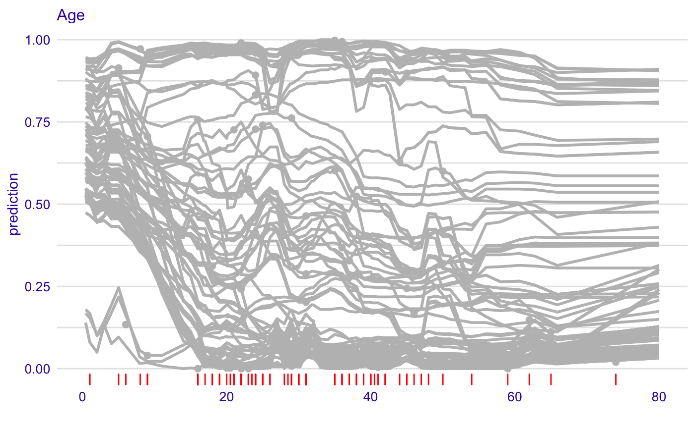
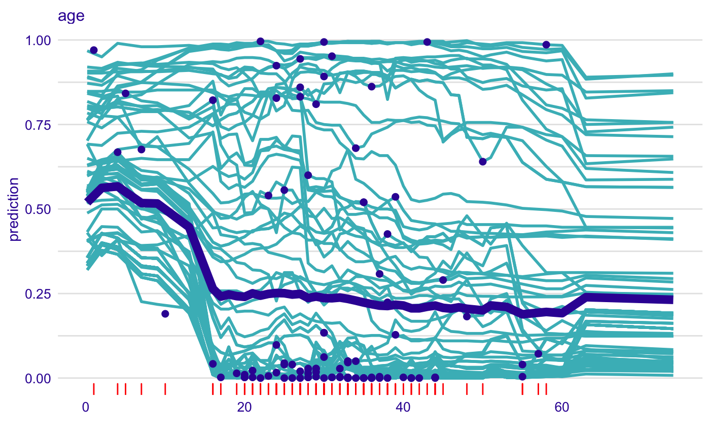
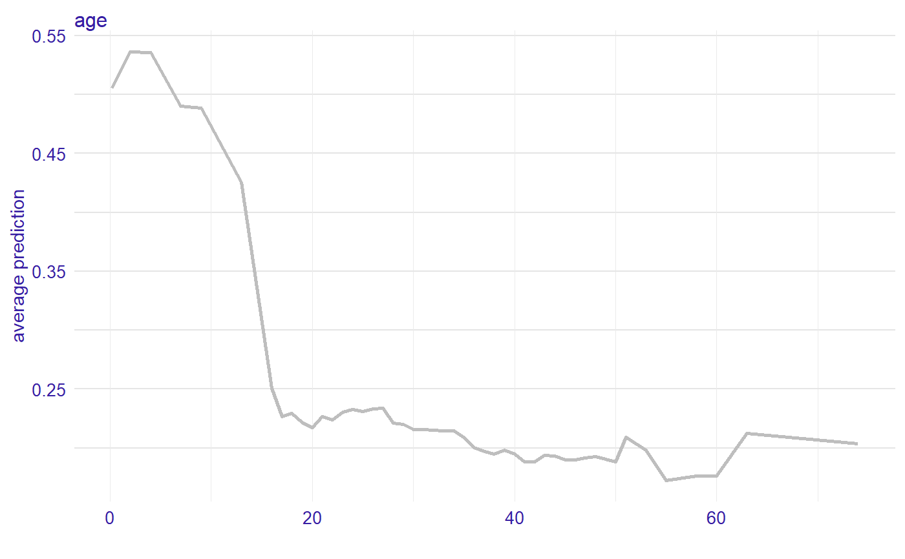

Function 'show_rugs' adds a layer to a plot created with 'plot.ceteris_paribus_explainer' for selected observations. Various parameters help to decide what should be plotted, profiles, aggregated profiles, points or rugs.
show_rugs(x, ..., size = 0.5, alpha = 1, color = "#371ea3", variable_type = "numerical", sides = "b", variables = NULL)
Arguments
| x | a ceteris paribus explainer produced with function `ceteris_paribus()` |
|---|---|
| ... | other explainers that shall be plotted together |
| size | a numeric. Size of lines to be plotted |
| alpha | a numeric between 0 and 1. Opacity of lines |
| color | a character. Either name of a color or name of a variable that should be used for coloring |
| variable_type | a character. If "numerical" then only numerical variables will be plotted. If "categorical" then only categorical variables will be plotted. |
| sides | a string containing any of "trbl", for top, right, bottom, and left. Passed to geom rug. |
| variables | if not NULL then only `variables` will be presented |
Value
a ggplot2 layer
Examples
library("DALEX") # Toy examples, because CRAN angels ask for them titanic <- na.omit(titanic) selected_passangers <- select_sample(titanic, n = 100) model_titanic_glm <- glm(survived == "yes" ~ gender + age + fare, data = titanic, family = "binomial") explain_titanic_glm <- explain(model_titanic_glm, data = titanic[,-9], y = titanic$survived == "yes")#> Preparation of a new explainer is initiated #> -> model label : lm (default) #> -> data : 2099 rows 8 cols #> -> target variable : 2099 values #> -> predict function : yhat.glm will be used (default) #> -> predicted values : numerical, min = 0.1483104 , mean = 0.3244402 , max = 0.9822194 #> -> residual function : difference between y and yhat (default) #> -> residuals : numerical, min = -0.8840083 , mean = 1.110794e-14 , max = 0.8437859 #> A new explainer has been created!cp_rf <- ceteris_paribus(explain_titanic_glm, selected_passangers) pdp_rf <- aggregate_profiles(cp_rf, variables = "age") plot(cp_rf, variables = "age") + show_observations(cp_rf, variables = "age") + show_aggregated_profiles(pdp_rf, size = 3)library("randomForest") model_titanic_rf <- randomForest(survived ~ gender + age + class + embarked + fare + sibsp + parch, data = titanic) model_titanic_rf#> #> Call: #> randomForest(formula = survived ~ gender + age + class + embarked + fare + sibsp + parch, data = titanic) #> Type of random forest: classification #> Number of trees: 500 #> No. of variables tried at each split: 2 #> #> OOB estimate of error rate: 18.96% #> Confusion matrix: #> no yes class.error #> no 1321 97 0.06840621 #> yes 301 380 0.44199706#> Preparation of a new explainer is initiated #> -> model label : randomForest (default) #> -> data : 2099 rows 8 cols #> -> target variable : 2099 values #> -> target variable : Please note that 'y' is a factor. (WARNING) #> -> target variable : Consider changing the 'y' to a logical or numerical vector. #> -> target variable : Otherwise I will not be able to calculate residuals or loss function. #> -> predict function : yhat.randomForest will be used (default) #> -> predicted values : numerical, min = 0 , mean = 0.2383516 , max = 1 #> -> residual function : difference between y and yhat (default)#> Warning: '-' nie ma sensu dla czynników#> -> residuals : numerical, min = NA , mean = NA , max = NA #> A new explainer has been created!#> Top profiles : #> gender age class embarked country fare sibsp parch #> 557 male 50 2nd Southampton England 13.0000 0 0 #> 557.1 female 50 2nd Southampton England 13.0000 0 0 #> 660 male 25 3rd Cherbourg Lebanon 14.0901 1 0 #> 660.1 female 25 3rd Cherbourg Lebanon 14.0901 1 0 #> 1535 male 20 restaurant staff Southampton England 0.0000 0 0 #> 1535.1 female 20 restaurant staff Southampton England 0.0000 0 0 #> _yhat_ _vname_ _ids_ _label_ #> 557 0.000 gender 557 randomForest #> 557.1 0.932 gender 557 randomForest #> 660 0.050 gender 660 randomForest #> 660.1 0.550 gender 660 randomForest #> 1535 0.000 gender 1535 randomForest #> 1535.1 0.802 gender 1535 randomForest #> #> #> Top observations: #> gender age class embarked country fare sibsp parch #> 557 male 50 2nd Southampton England 13.0000 0 0 #> 660 male 25 3rd Cherbourg Lebanon 14.0901 1 0 #> 1535 male 20 restaurant staff Southampton England 0.0000 0 0 #> 942 female 59 2nd Southampton United States 26.0000 0 1 #> 491 male 30 2nd Southampton England 13.0000 0 0 #> 1639 male 47 victualling crew Southampton England 0.0000 0 0 #> _yhat_ _label_ _ids_ #> 557 0.000 randomForest 1 #> 660 0.050 randomForest 2 #> 1535 0.000 randomForest 3 #> 942 0.914 randomForest 4 #> 491 0.008 randomForest 5 #> 1639 0.004 randomForest 6#> Top profiles : #> _vname_ _label_ _x_ _yhat_ _ids_ #> 1 age randomForest 0.1666667 0.50576 0 #> 2 age randomForest 2.0000000 0.53630 0 #> 3 age randomForest 4.0000000 0.53578 0 #> 4 age randomForest 7.0000000 0.49010 0 #> 5 age randomForest 9.0000000 0.48850 0 #> 6 age randomForest 13.0000000 0.42540 0plot(cp_rf, variables = "age") + show_observations(cp_rf, variables = "age") + show_rugs(cp_rf, variables = "age", color = "red") + show_aggregated_profiles(pdp_rf, size = 3)